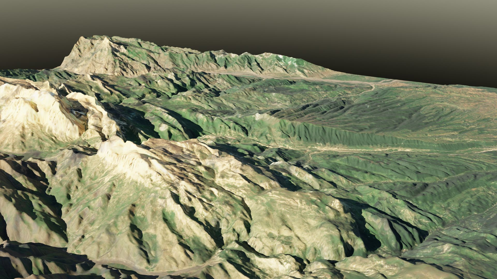
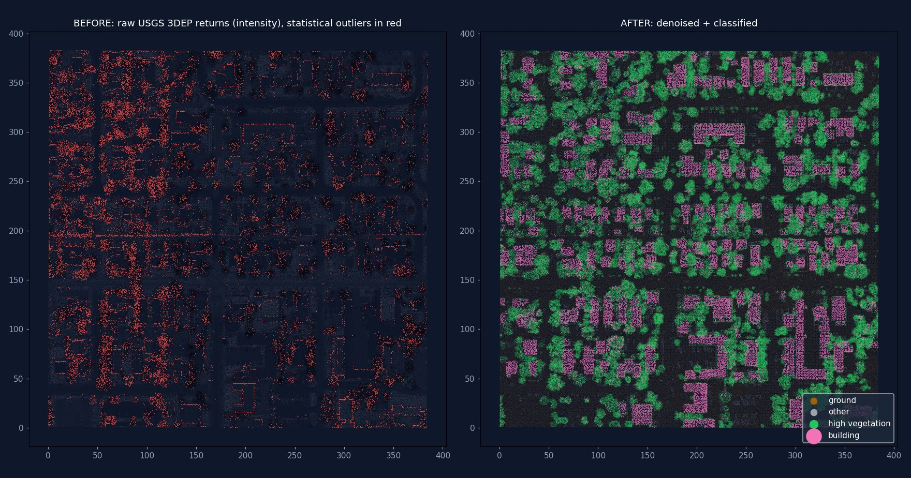
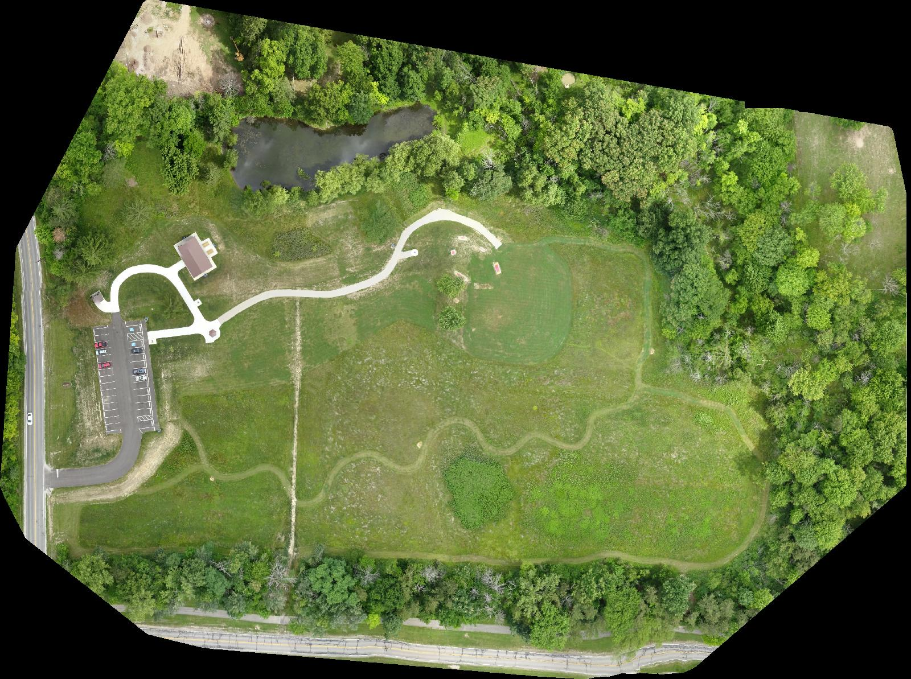
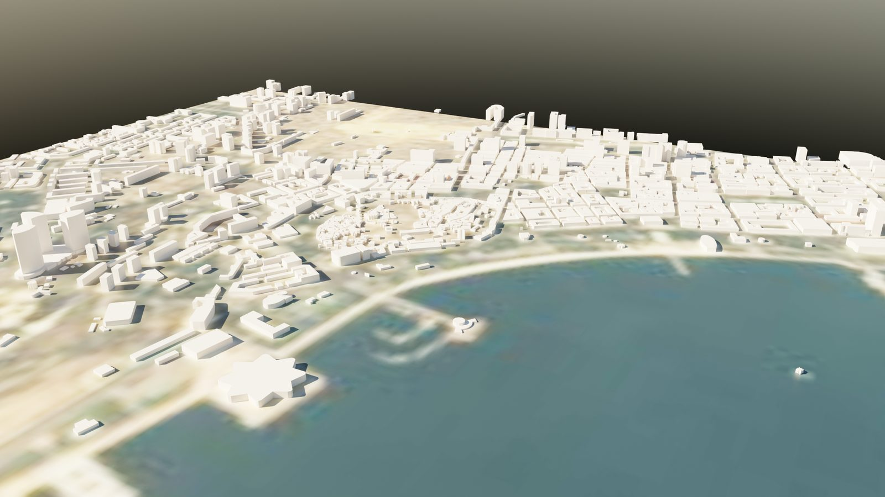
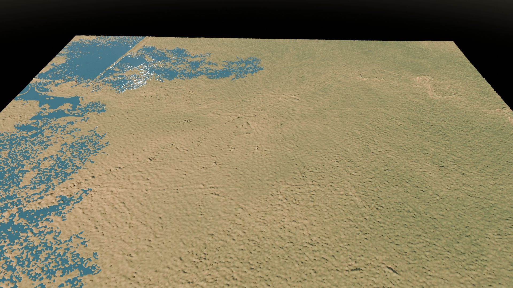
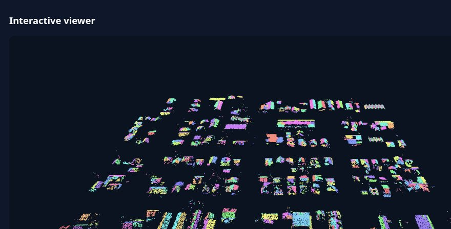
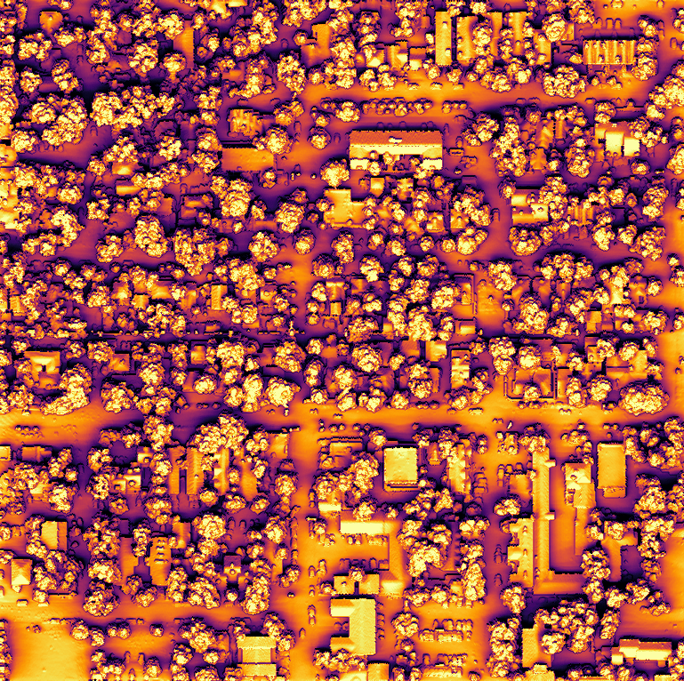
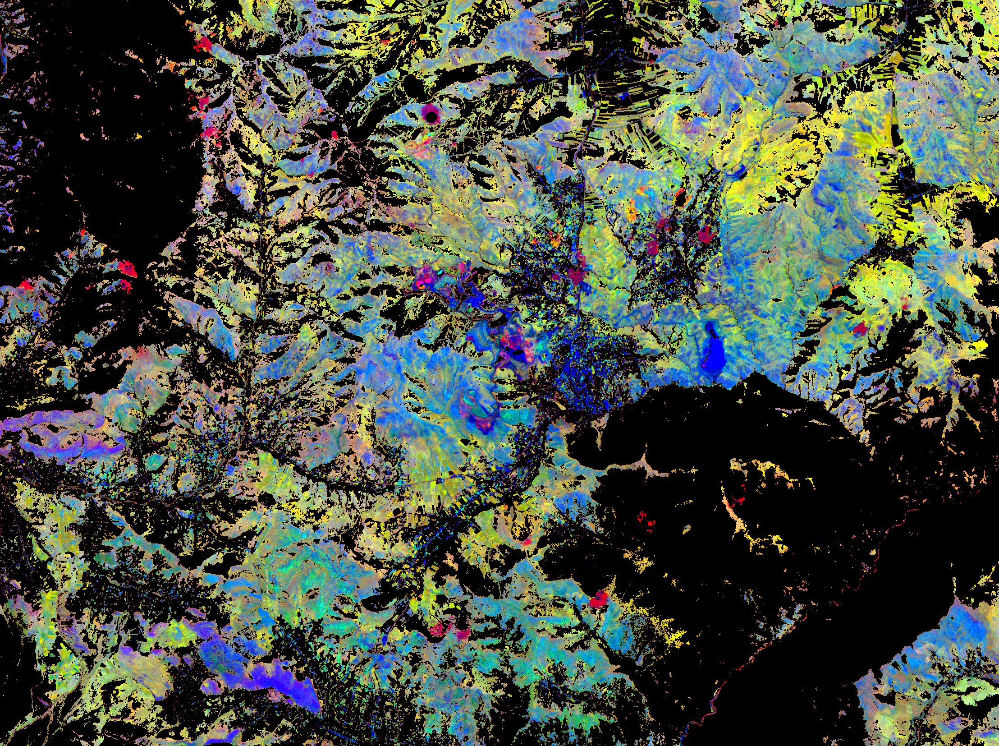
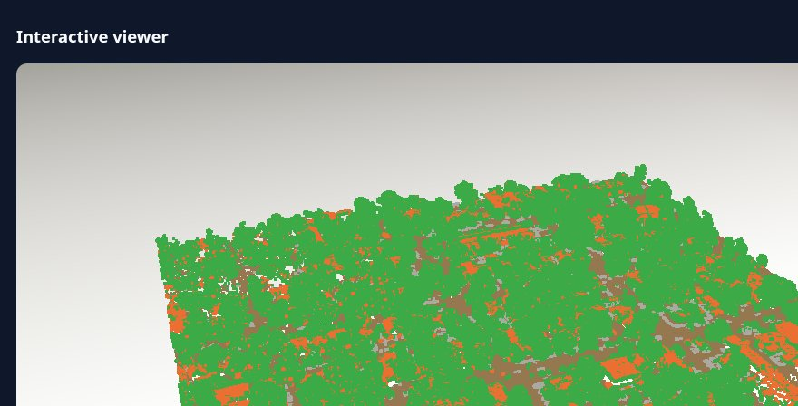

Nurtac Suleymanzade · GIS / 3D & Advanced
Real working outputs built from open data with free software: GPU rendering, large-data web mapping, LiDAR and photogrammetry.

Photorealistic 3D terrain (4K)
LiDAR: denoise, classify, DTM/DSM
Drone orthomosaic → COG
Baku 3D city modelUnreal Engine 5 work → UE 5.8 interior renders and Cesium pipeline tests.

GPU 2D flood simulation (Kura–Aras)
LiDAR roof-plane reconstruction
GPU solar & shadow analysis
Mineral alteration mapping, Gedabek
Cesium 3D Tiles digital twinAll outputs on this page were produced from open data with free software (Blender, PDAL, GDAL, OpenDroneMap, MapLibre GL, Three.js). Compute: a cloud Linux workstation with NVIDIA L4 GPUs.